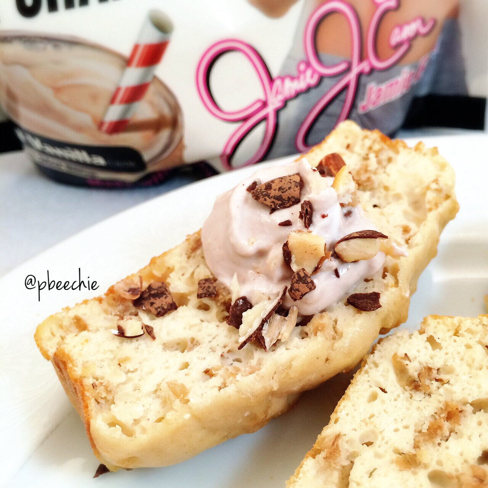

White Chocolate Puff Cake (using Jamie Eason Natural Whey Isolate)
What if I posted pictures and didn't give any indication about whether or not it tasted good. Like lolk here's a picture now decide if it's worth making or not good luck do well. That'd be fun I bet. But that depends who you're asking. #evilkim I made white chocolate puff cake, topped with a chocolate protein fluff and sugar-free amberlyn chocolates chocolate almonds. Maybe it's fantastic #goodluckdowell ;p clue: it is. 
- 1 scoop P28 white chocolate pancake mix
- 1 scoop Jamie Eason's Lean Body For Her vanilla whey protein (40g)
- 2 TBSP coconut flour
- 1.5 cup puffed rice cereal
- 1/2 cup unsweetened almond milk
- 1 TBSP white chocolate cake batter Youfreshnaturals nut butter (or cashew butter)
- 2 egg whites
- 2 TBSP stevia
Mix everything in a bowl! If you don't have the white chocolate nut butter OR cashew butter, almond butter is okay. Spray 3 Mini loaf pans (or a small oblong dish) with nonstick spray. Evenly pour your batter in. Bake at 350 F for 17-19 mins. Slice into 6 pieces and enjoy!
Nutrition Info for 1 slice: 101 cals; 3 g fat, 9 g carbs (3 g fiber), and 9 g protein